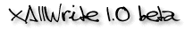

<!-- Documentation XAllWrite (c)1997-2000 AXENE contact axene@axene.org>
<html>

<head>
<title>A propos d'XAllWrite</title>
</head>

<body BGCOLOR="#FFFFFF" BACKGROUND="Images/back.gif" TEXT="#000000">

<p ALIGN="center">&nbsp;&nbsp;&nbsp;&nbsp; </p>

<p WIDTH="57" HEIGHT="57"><br>
<br>
</p>

<h2 align="center">XAllWrite®</h2>

<h3 align="center">Version 1.0 BETA</h3>

<p align="center">Copyright ©1997-98 Axene, tous droits réservés. XAllWrite est une
marque déposée. </p>

<p><br>
</p>

<hr>

<p><br>
Ce manuel, de même qu'XAllWrite, est cédé sous <a HREF="License.html">licence</a> et ne
peut être copié ou utilisé que conformément à la licence. Les informations contenues
dans ce manuel sont données à titre purement indicatif. Elles peuvent être modifiées
sans préavis et ne constituent pas un engagement de la part d'Axene. Axene dégage toute
responsabilité vis-à-vis des erreurs ou imprécisions qui pourraient être relevées
dans ce manuel. </p>

<p align="center">Sauf autorisation spécifiée dans la licence, aucune partie de ce
manuel ne peut être reproduite, enregistrée ou transmise sous quelque forme ou part
quelque moyen que ce soit, électronique, mécanique ou autre, sans l'autorisation écrite
préalable d'Axene.<br>
</p>

<p align="center"><br>
</p>

<hr align="center">

<p align="center"><br>
</p>

<h3 align="center">Axene, Inc.</h3>

<p align="center">30 Montgomery Street, Suite 604, Jersey City, NJ 07302-3821. USA<br>
Fax: US(201)434-4244 </p>

<h3 align="center">Axene France</h3>

<p align="center">33, rue Bayen, 75017 Paris, France.<br>
Fax: +33-1 44 93 39 94 </p>

<p align="center"><br>
</p>

<hr align="center">

<p align="center"><br>
Pour toute information, notre site web est disponible </p>

<h3 align="center"><a HREF="http://www.axene.org/french/">http://www.axene.org/</a></h3>

<p align="center">eMail&nbsp;: axene@axene.org<br>
</p>

<p><br>
</p>

<hr>

<p ALIGN="right"></p>
</body>
</html>
